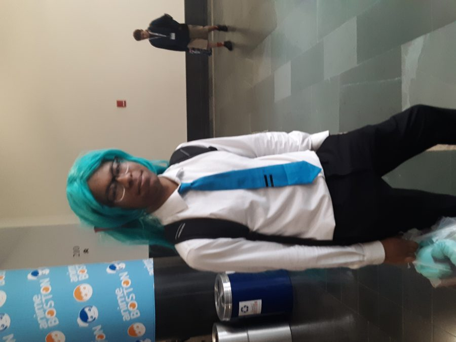

Bienvenido a la página de Hatsune Miku
La diva virtual más famosa del mundo
Galería

Acerca de
Hatsune Miku es una voz sintetizada y personaje vocaloid de Crypton Future Media. Nació en 2007 y se convirtió en un ícono mundial de la música y la cultura digital.